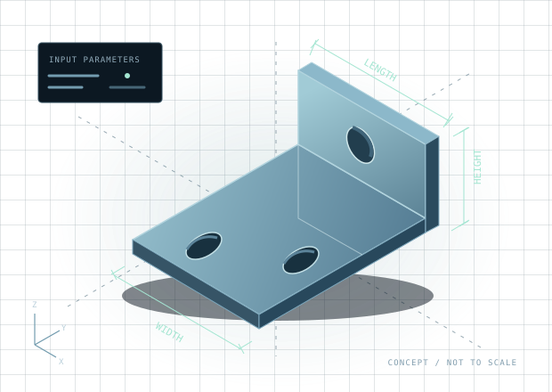

소규모 제조·설계 팀을 위한 유료 파일럿
반복되는 부품 작업,
검수 가능한
자동화로.
치수를 바꾸고, 다시 만들고, 결과를 확인하는 일.
자주 쓰는 부품군 하나부터 재실행 가능한 작업으로 정리합니다.
로컬 실행 · 원본 입력과 검수 근거 인계 · MIT 소스 공개

FREECAD AUTOMATION PILOT
990,000원
부가세 별도
- 적용 대상
- 회사 1곳 · 실행 환경 1개
- 자동화 범위
- 부품군 1개
- 합의한 입력 조합
- 최대 10개
- 설정 수정
- 2회
인계 후 14일 안에 총 2시간 원격 지원
제안 가격. 고객별 범위·일정·결제 조건은 상담 후 별도 확정.
설정부터 인계까지
다음 작업에도 쓸 수 있게.
한 번 생성된 파일과 함께,
그 결과를 다시 만드는 방법을 남깁니다.
- 01범위·입력 목록
작업 범위 합의
기존 지원 형상에서 부품군과 치수 관계, 입력 조합, 검수 담당자를 정합니다.
- 02실행 환경·설정 파일
환경과 자동화 설정
합의한 로컬 환경을 확인하고 반복 실행할 설정을 구성합니다. FreeCAD는 별도 설치합니다.
- 03STEP / STL · 품질 JSON
생성과 소프트웨어 검수
조합별 STEP/STL을 생성하고 품질 결과와 실제 파일 근거를 확인합니다. 실패한 조합은 따로 기록합니다.
- 04재실행 안내·지원
재실행과 인계
입력, 명령, 검수 기록과 오류 대응 방법을 설명합니다. 고객이 승인한 세션에서 제한된 지원을 제공합니다.
검수 기준을 먼저 합의합니다
파일이 생겼다는 것에서
한 걸음 더.
결과 파일, 실제 재읽기 검사, 실행 기록을 함께 확인합니다. 검수 가능한 근거를 남기는 것이 이 파일럿의 기준입니다.
15분 데모 진행안 받기인계 시 확인할 것
- 합의한 입력 조합별 STEP/STL 생성 및 strict create-quality 통과
- 실제 STEP 재읽기·STL 검사와 매니페스트 파일 근거 확인
- 재실행 가능한 입력·명령·검수 기록 인계
소프트웨어 검수는 제조 승인, 실물 공차 확인 또는 안전성 인증을 대신하지 않습니다. Studio의 작업 성공과 품질 통과는 별도로 확인합니다.
문의 전, 30초 확인
우리 작업에도
맞을까요?
아래 조건을 확인하면 첫 상담에서 범위를 빠르게 정할 수 있습니다. 선택 내용은 이 브라우저 안에서만 사용하며 전송하거나 저장하지 않습니다.
범위를 명확하게
시작 전에 알아둘 내용.
무료 FreeCAD와 무엇이 다른가요?
FreeCAD와 이 프로젝트의 MIT 소스는 직접 사용할 수 있습니다. 파일럿 비용은 환경 확인, 고객별 자동화 설정, 결과 검수, 재실행 가능한 인계와 제한된 지원에 대한 서비스 비용입니다. FreeCAD 공식 판매·인증 상품은 아닙니다.
99만 원에 포함되지 않는 것은 무엇인가요?
- Windows/Linux 전체 워크플로우 지원 보증
- 복잡한 조립, 신규 형상 엔진, 클라우드 다중 사용자 기능
- 도면·FEM·PDF 보고서의 자동 포함 — 필요한 경우 별도 범위 확정
- 제조 승인, 실물 검사, 공차·안전성 인증
- 무제한 수정·지원 및 고객 작업 시간 절감 보장
일정과 결제는 어떻게 정하나요?
부품군, 입력 조합과 검수 기준을 확인한 후 착수·납기·검수 일정과 결제 조건을 별도로 확정합니다. 인계 후 14일은 지원 기간이며 납기를 의미하지 않습니다. 이 페이지에서 결제나 계약은 체결되지 않습니다.
고객 도면이나 모델을 올려야 하나요?
공개 문의에는 올리지 않습니다. GitHub 문의는 누구나 볼 수 있으므로 일반적인 부품 종류와 사용 환경만 알려주세요. 고객명, 연락처, 모델, 도면, 치수 및 기밀 자료의 전달 방법은 이후 별도로 합의합니다. 이 페이지는 모델 업로드나 자동 원격 접속 기능이 없습니다.
작업 시간이 얼마나 줄어드나요?
고객 작업에 따라 달라 사전에 보장하지 않습니다. 파일럿에서 기존 방식과 자동화 방식의 사람 투입 시간, 전체 완료 시간, 수정·재시도를 각각 기록해 후속 적용 여부를 판단합니다.
다음 단계
반복하는 부품군 하나부터
함께 확인해 보세요.
제안서를 검토하고, 사용 환경과 일반적인 부품 종류로 문의를 시작하세요.
GitHub 문의는 공개됩니다. 연락처, 고객명, 도면, 모델, 치수 및 기밀 자료는 올리지 마세요. 상세 자료 전달 방법은 별도로 합의합니다.